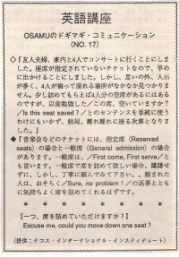

席を詰めていただけますか。
Osamu and his wife and another couple decided to go to a concert. They didn't have reserved seats. They planned to go early because of that. However, it was hard for them to find four seats together. Osamu couldn't ask people to move or ask if their seats were saved. So they sat separately. People don’t like to sit right next to other people so they will often just leave one seat in between them open. This doesn’t allow couples to sit next to each other. So you can ask them to move down. It’s not a problem to ask this of strangers.
友人夫婦、家内と４人でコンサートに行くことにしました。座席が指定されていないチケットなので、早目に出かけることにしました。しかし、思いの外、人出が多く、４人が揃って座れる席がなかなか見つかりません。少し詰めてもらえれば４人の空席があるにはあるのですが、人に頼む際の適当な表現が思い浮かばず、結局、離れ離れに座る次第となりました。
音楽会などのチケットには、指定席（Reserved seats）の場合と一般席（General admission）の場合があrます。一般席は、／First come, First serve／とも言います。一般席で席を詰めて欲しい場合、躊躇せずに、しかし、丁寧に頼んでみて下さい。頼まれた人は、おそらく、Sure, no problem! の返事とともに気持ちよく席を詰めてくれるはずです。
一つ、席を詰めて頂けますか。
Excuse me, could you move down one seat?

| © 1995-2013 NACOS International Institute. All Rights Reserved. |